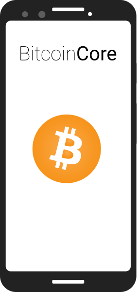

|  |
flash_on
Lightning Networkcontactless NFCbluetooth Bluetooth |
Usable and sexy mobile full nodes within your lifetime*
Bitcoin Core is the fastest, safest and most battle-tested implementation of the Bitcoin protocol.
This is mission critical software so instead of reinventing the wheel and making another mobile wallet let's make Core usable on mobile instead. Empower users by putting a full node in their pocket. Add Lightning, NFC and Bluetooth support to make it even more awesome and private.
Ideally most nodes on the network would be mere phones and no one would ever have to debate big-blockers again.
(What follows is a non-exhaustive tracker of both smaller tasks and serious efforts I find important on Bitcoin Core's road to mobile. Focus is on Android but most of these improvements should benefit a future iOS port as well.)
| done Merged |
Android NDK build Allow Bitcoin Core to be built against the Android NDK. First step on the long road to mobile. depends: Add Android NDK support #16110 by Igor Cota |
| alarm_on Code review in progress |
NDK build improvements build: modest Android improvements #17396 by Igor Cota |
| done Merged |
Fix GNU autoconf pthread Android bug ax_boost_thread: do not set -pthread on Android by Igor Cota |
| alarm_on Code review in progress |
Static Qt Qt is the C++ framework Satoshi chose for the original Bitcoin client GUI. Allow one to link it statically on Android and avoid bundling all the Qt libraries when packaging Bitcoin Core in its APK. Remove Core qjnionload.cpp in favor of Android QPA androidjnimain.cpp by Igor Cota |
| build Work in progress (60%) |
Mobile GUI A mobile app needs a slick UI. The QML-based one I'm working on is meant to be a drop-in alternative to Qt Widgets-based bitcoingui. It is light and builds on top of GUI current code. I also have a novel idea: on startup avoid displaying balance and transactions and go straight into QR scanning. Make the whole flow more private cause the user probably just wants to pay for something anyway. WIP: Qt: add QML based mobile GUI #16883 by Igor Cota |
| alarm_on Code review in progress |
Android packaging This PR aims to make it very easy to produce a Bitcoin Core APK (Android application package). Qt: Add Android packaging support #17227 by Igor Cota |
| clear Not yet started |
Android Gitian build Gitian will allow us to have trusted binaries built and signed by multiple parties. You would be able to verify your Bitcoin Core APK. |
| build Work in progress (30%) |
QR Code scanner A mobile wallet that is not able to scan QR codes is not very useful. There is a possibility of replacing the qrencode dependency with QZXing. This would allow for scanning of QR codes. I have tested this and it works fine. But to add a new dependency to Core we need an official QZXing release at the very least. QR Code scanner #9913 by Luke Dashjr |
| clear Not yet started |
NFC and Bluetooth support QR codes are cool and all but imagine a dystopian future where our world is blanketed with CCTV. Your transactions could be linked to your face and person via chainalysis. NFC and Bluetooth are peer to peer radio communication and allow us a bit more privacy. Many users are familiar with using NFC for "contactless" payments. For such a huge win in UX this is quite easy to implement. |
| clear Not yet started |
Power and data management Verifying transactions is CPU intensive. Lest you want your battery drained and your phone getting hot in your pocket this is best done either when the app is in the foreground or phone is charging. A platform independent way to determine the charging and network state would need to be devised. This would be useful for laptops as well as for phones. Phones obviously provide for this, but eg. a Linux laptop can read from sys/class/power_supply. |
| build Work in progress (50%) |
Lightning Development Kit (rust-lightning) Instantaneous transactions work so well on mobile, it's a great fit. Pair it with NFC and we're beating Visa at their game. rust-bitcoin is a library that makes it very easy to add Lightning Network functionality to existing wallet software. I leveraged rust-bitcoin team's awesome work to try and make Bitcoin Core lightning-enabled. See CoreLightning below. Rust-Lightning, not Rusty's Lightning! |
| build Work in progress (20%) |
CoreLightning This work-in-progress is the result of me dabbling with rust-lightning on top of Matt Corallo's rusty PRs. It's experimental and unstable but one can make Lightning channels and payments from their Bitcoin Core wallet. Add Lightning Network support #18179 by Igor Cota |
| build Work in progress (40%) |
assumeutxo assumeuxto would substantially reduce the time needed to bootstrap a full node. Instead of verifying everything yourself which takes days (weeks on mobile) you trust the devs to bake a hash of a recent UTXO set into the Bitcoin Core binary. If someone has tricked you into using a malicious binary you are boned anyway so IMO this is an acceptable tradeoff. Assume UTXO project by James O'Beirne |
| build Work in progress (20%) |
utreexo "Utreexo is a novel hash based dynamic accumulator, which allows the millions of unspent outputs to be represented in under a kilobyte. Currently transactions specify inputs and outputs, and verifying an input requires you to know the whole state of the system. With Utreexo, the holder of funds maintains a proof that the funds exist, and provides that proof at spending time to the other nodes. These proofs are compact but do represent the main downside in the utreexo model they present an additional data transmission overhead which allows much smaller state." I find the transmission overhead acceptable on mobile since phones are hardware constrained but increasingly not data constrained. utreexo: a dynamic accumulator for bitcoin state research by Thaddeus Dryja |
* 5 years tops. But progress estimates (and commentary) on the tracker are my own, so I could be way off.
Made by Igor Cota. I do this in my spare time.
/ /